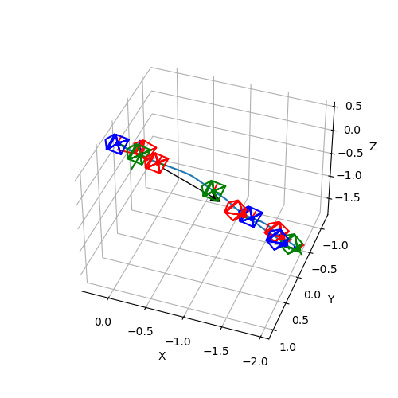

Note
Click here to download the full example code
Camera Trajectory¶
The following illustration shows a camera’s trajectory that has has been estimated from odometry. This specific trajectory has been used to reconstruct a colored mesh from a depth camera and an RGB camera.
print(__doc__)
import os
import numpy as np
import matplotlib.pyplot as plt
import pytransform3d.transformations as pt
import pytransform3d.trajectories as ptr
import pytransform3d.rotations as pr
import pytransform3d.camera as pc
from cycler import cycle
BASE_DIR = "test/test_data/"
data_dir = BASE_DIR
search_path = "."
while (not os.path.exists(data_dir) and
os.path.dirname(search_path) != "pytransform3d"):
search_path = os.path.join(search_path, "..")
data_dir = os.path.join(search_path, BASE_DIR)
intrinsic_matrix = np.loadtxt(os.path.join(
data_dir, "reconstruction_camera_matrix.csv"), delimiter=",")
P = np.loadtxt(os.path.join(data_dir, "reconstruction_odometry.csv"),
delimiter=",", skiprows=1)
for t in range(len(P)):
P[t, 3:] = pr.quaternion_wxyz_from_xyzw(P[t, 3:])
cam2world_trajectory = ptr.transforms_from_pqs(P)
plt.figure(figsize=(5, 5))
ax = pt.plot_transform(s=0.3)
ax = ptr.plot_trajectory(ax, P=P, s=0.1, n_frames=10)
image_size = np.array([1920, 1440])
key_frames_indices = np.linspace(0, len(P) - 1, 10, dtype=int)
colors = cycle("rgb")
for i, c in zip(key_frames_indices, colors):
pc.plot_camera(ax, intrinsic_matrix, cam2world_trajectory[i],
sensor_size=image_size, virtual_image_distance=0.2, c=c)
pos_min = np.min(P[:, :3], axis=0)
pos_max = np.max(P[:, :3], axis=0)
center = (pos_max + pos_min) / 2.0
max_half_extent = max(pos_max - pos_min) / 2.0
ax.set_xlim((center[0] - max_half_extent, center[0] + max_half_extent))
ax.set_ylim((center[1] - max_half_extent, center[1] + max_half_extent))
ax.set_zlim((center[2] - max_half_extent, center[2] + max_half_extent))
ax.view_init(azim=110, elev=40)
plt.show()
Total running time of the script: ( 0 minutes 0.193 seconds)